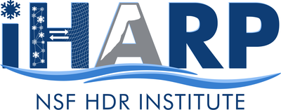

Emam Hossain
Ph.D. Candidate, Information Systems · University of Maryland, Baltimore County
I build machine learning that people can trust when conditions change. My work combines deep learning, causal inference, and domain knowledge to make models interpretable, reliable, and robust.
- Causal representation learning that puts partial expert knowledge to work
- Causal discovery and time series models that hold up under distribution shift
- Reliable learning from satellite data, with polar science as the testbed
- Benchmarks and challenges that make results reproducible
I am advised by Dr. Md Osman Gani in the Causal Artificial Intelligence Lab. Through iHARP, an NSF Harnessing the Data Revolution institute spanning eight institutions, I work with glaciologists, atmospheric scientists, and data scientists on polar science data. I release code and data with my first-author papers to support open science and reproducibility.
Before my Ph.D., I taught computer science for three and a half years at Port City International University in Bangladesh.
since 2022

iHARPResearch Assistantsince 2022
2021–2022
2018–2021
2017, 2019
Latest
News More news →
- Oct 2026
Our paper on glacier calving-front delineation in SAR imagery was accepted at IEEE ICMLA 2026 in Rochester, MI.
- Aug 2026
Presented our position paper, Moving Beyond Correlation: Causal AI for Generalizable Climate Science, at the NSF HDR Ecosystem Conference in Chicago.
- Aug 2026
Our paper on inductive biases in cryospheric image classification appeared at IEEE IGARSS 2026.
Research highlights
Selected publications All publications →

PCG-VAE: Learning Causal Representations under Partial Structural Knowledge
Under review, CVPR 2027
Experts mark each causal link as known, forbidden, or unknown, and the model learns only the unknown ones. It recovers the hidden structure exactly in all 60 runs, compared with 3 of 20 for full discovery.

VLM-Gauge: Pricing Vision-Language Supervision for Causal Representation Learning
Under review, ICLR 2027
Uses a vision-language model as the annotator and prices its labels before training: a label of quality J is worth about J² human labels. Labels on 17,000 images beat human labels on 4,000, and twelve attributes are supervised jointly.

Causal Time Series Modeling of Supraglacial Lake Evolution in Greenland under Distribution Shift
IEEE ICMLA 2025
Lag-aware causal graphs choose the predictors. Causal models beat correlation-based baselines in all six leave-one-basin-out tests, with accuracy gains of up to 12.59%.

TimeGraph: Synthetic Benchmark Datasets for Robust Time-Series Causal Discovery
ACM SIGKDD 2025, Datasets and Benchmarks Track
Benchmarks with known causal graphs plus real-world trends, seasonality, missing data, and hidden confounders. Under nonlinear dynamics, standard methods often find none of the true links.